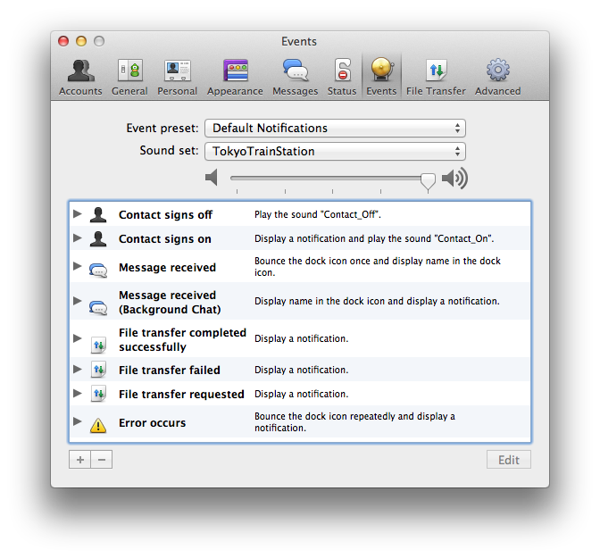
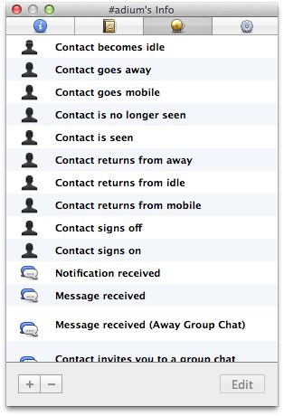

Events
Adium features a highly-customisable "Events" system which allows you to tie certain "actions" to "events" and save settings of this kind as "presets".
What are "events" and "actions"?
Events are all kinds of things happening in Adium like messages being sent or contacts changing their status. Actions are things that are done when those events occur, for example a sound being played, the bouncing of the dock icon or sending a message.
Here are some examples of actions being tied to events:
- display (Growl- or Notification-Center-type) visual notifications when you receive new messages
- play a sound when contacts sign on
- open a chat window when a specific contacts signs on.
For events, actions can be added and removed. Events can be edited globally and on a per-contact basis.
What are "presets"?
Depending on the situation, you might like to have different actions for events. To avoid having to edit all events every time, you can save global event settings as presets. Adium comes with three pre-existing presets: "Default Notifications", "Audio Notifications" and "Visual Notifications".
Editing events globally
To edit an event globally, first open the Events section of Adium's preferences.
To add an action for an event
- Select the event.
- Click the "+" button.
- Choose the action, edit settings (some actions have them) as desired and click "OK".
To remove an action tied to an event
- Click the arrow next to the event to display actions attached to it.
- Select the action you want to remove.
- Click the "-" button.
To edit the settings for an existing action
- Select the action.
- Click the "Edit" button.
- Make changes as desired and click "OK".

Editing events on a per-contact basis
To edit an event on a per-contact basis, first click "Get Info…" (⇧⌘I) from the Contact menu and select the third pane called "Events".
To add an action for an event
- Select the event.
- Click the "+" button.
- Choose the action, edit settings (some actions have them) as desired and click "OK".
To remove an action tied to an event
- Click the arrow next to the event to display actions attached to it.
- Select the action you want to remove.
- Click the "-" button.
To edit the settings for an existing action
- Select the action.
- Click the "Edit" button.
- Make changes as desired and click "OK".
